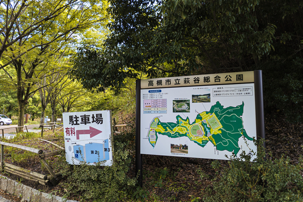
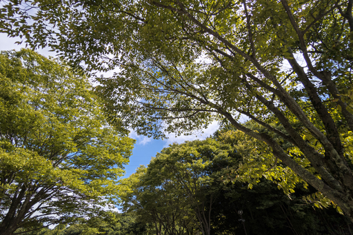
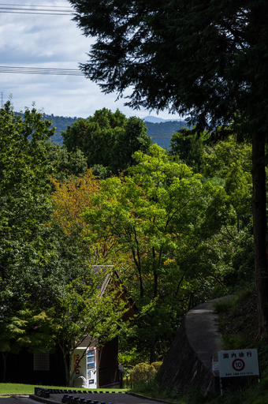
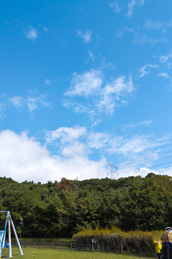
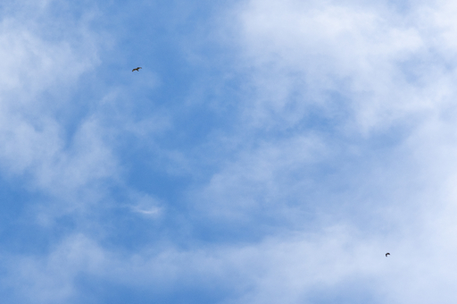
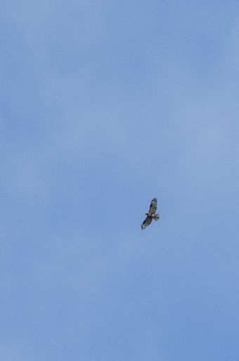
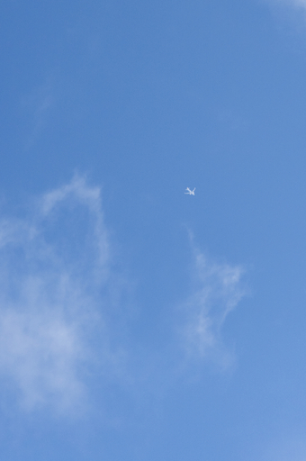
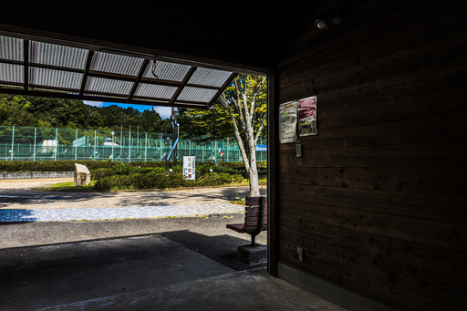

毎年今ごろの時期になると高槻市の萩谷総合公園でタカの渡りを見ることができるということで見に行ってきました。萩谷運動公園は初めてです。
北摂の山の中にある公園なので木々に囲まれた美しい公園です。駐車場も完備されているので家族連れにも人気のようです。
木々の間からもれる日射しも美しい。
緑が綺麗。
公園の入口から 300m ほど坂道を下ると今日の目的地のちびっこ広場に到着します。三連休の最終日ということもあって家族連れとなんだかコアそうな人たちでいっぱいです。
10 時半ごろに到着するとすでに多くの人がタカの渡りを見ていて、双眼鏡、三脚に据え付けられたフィールドスコープ、1m はあろうかという望遠レンズをつけたカメラで重武装しています。すげー
カメラを組み立てて準備していると隣のご夫婦 (？) が鉄塔の向こうからこっちに向かってる、肉眼でわかる、と話しているのでそちらを見上げます。1 羽、飛んできます。ですがカメラはまだ組み立て準備中で間に合いません！！写真は取れなくても見たい！！なのでカメラは諦めて双眼鏡で補足することに。
1 羽のタカがちょうど西に向かって頭上を渡っていくところを見ることができました。美しい。カメラの準備が間に合っていれば！！と思わずにはいられません。
それから空を眺めてはいたものの自分にはどこにタカが飛んでいるのかまったく見えません。しかも飛蚊症があるので飛蚊症の影なのかそれともタカのシルエットが見えているのかさっぱりわかりません。タカ自体も非常に高いところを飛んでいるので点よりさらに小さな黒い粒です。自分よりお年を召したベテランさんがどうして見えてるのかさっぱりわかりません。
ベテランさんが眺める方向を参考に双眼鏡を覗いて探し回ります。
いました。東の空の方で 2 羽、上昇気流に乗りながら輪を描いて上空に登ろうとしています。
ときおり飛翔するタカの姿を視界に入れることはできたのですが……
この日、ベテランさんの X のポストを見ると 147 羽のタカが渡っていくのを見ることができたそうです。ただすごく離れたところを飛んでいたとのことでした。自分には 7 羽しか見えなくてなぜベテランさんを始め多くの人に見えてるのかがさっぱりわかりません。
高槻萩谷総合公園鷹の渡り調査
— まさかず (@Minasemk) September 23, 2024
15:30にて調査終了します。
サシバ68 ハチクマ偶然68
ノスリ5 オオタカ1 ミサゴ1
チョウゲンボウ2 不明2
計147羽が本日の渡りてす。
やっと今季初の三桁ですが
ほとんどが遠く南側でした
頭上やもう少し近くの渡り期待
しています。
ありがとうございました
ほぼ諦めの境地で人間がつくった鳥を撮りました。マイルドセブンの CM っぽい？
帰りのバスも 1 時間に 1 本で、スマホを見ていてうっかり乗り過ごしそうになったというオチ付きです。
バスが奈佐原を過ぎてからはずっとワイディングロードなので、乗り物に弱い人にとってはちょっとつらいかも。それと曜日と時間帯によっては関西大学の通学時間とぶつかってしまうので関西大学まではバスが激混み状態になります。関西大学をすぎるとバスに乗っているのは自分一人でした(笑